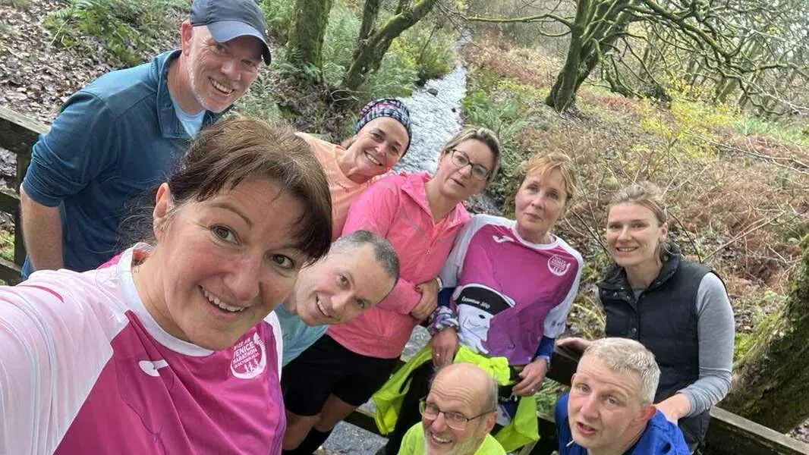

Route 01 · Temporary preview
Garnock Valley Runners · Meet area 04
Running in
Lochwinnoch.
Waterside miles, woodland trails and a brilliant local running community in Lochwinnoch.

Local miles
Make the most of the lochside.
Lochwinnoch gives us big skies, waterside paths, woodland trails and an uplifting backdrop for every run. Come along for a sociable local route that feels like a proper escape.
We meet at Castle Semple Visitor Centre every Wednesday at 7:30pm and Sunday at 9:30am. Check the Facebook group before heading out for the confirmed route.
Where to meet
Castle Semple Visitor Centre
Meet the group here for Lochwinnoch runs, every Wednesday at 7:30pm and Sunday at 9:30am. Check Facebook before setting off for any last-minute updates.
Club route library
Lochwinnoch routes to explore.
Routes shared by the club will appear here. Use the maps to explore distance, elevation and surface before you head out.
Route 02 · Temporary preview
Club route
Route 03 · Temporary preview